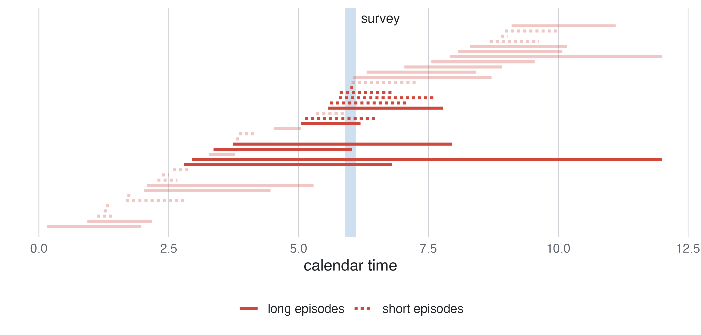
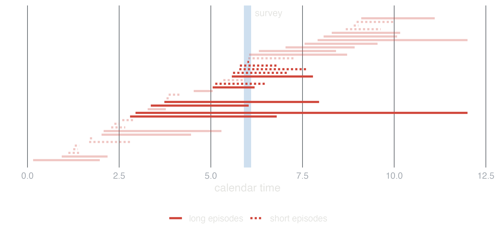
Epidemiology guide, part 2
In an observational study the investigator does not decide who is exposed. Exposed and unexposed people may differ in other ways that affect the outcome (confounding), people may enter the study in ways related to exposure and outcome (selection bias), and exposure or outcome may be measured with error (information bias). Each design is a way of sampling a population. The analysis has to match that sampling, and the causal diagram says what to adjust for.
| design | samples | measures | main model |
|---|---|---|---|
| Cross-sectional | a population at one time | prevalence, prevalence ratio or OR | logistic or linear regression |
| Ecological | groups (regions) | rates and means of groups | regression on group summaries |
| Cohort | people free of the outcome, followed | risk, rate, hazard | Cox, Poisson, logistic |
| Case-control | cases, and a sample of non-cases | odds ratio | logistic regression |
| Matched case-control | cases, and controls matched to each | odds ratio within sets | conditional logistic regression |
| Nested case-control | a cohort’s cases, controls from their risk sets | hazard ratio | conditional logistic regression |
| Case-cohort | a cohort’s cases, a random subcohort | hazard ratio | weighted Cox regression |
| Prognosis | patients from diagnosis | survival, cumulative incidence, HR | Kaplan-Meier, Cox, competing risks |
What it is. Exposure and outcome measured at the same time in a sample of a population: a health survey, a screening programme.
Estimates. Prevalence, and prevalence ratios or odds ratios between groups.


Strengths. Quick and cheap; describes the burden of a condition and plans services; studies many exposures and outcomes at once.
Limitations. Exposure and outcome are measured together, so their time order is often unknown (does low activity cause depression, or the reverse?). Prevalent cases over-represent long-lasting disease (Figure 1). Survivors only: people who died of the disease are missing.
Analysis. Prevalence with its confidence interval; logistic regression (odds ratios) or, better for common outcomes, a log-binomial or Poisson model with robust errors (prevalence ratios); linear regression for continuous outcomes.
Interpretation. An odds ratio of 1.8 for diabetes with obesity means the odds of having diabetes are 1.8 times higher in obese people with the same values of the other variables in the model. It is not a risk of developing diabetes, and with a common outcome it overstates the prevalence ratio.
In studysim. Blood pressure in US adults or Diabetes in Pima women, cross-sectional design.
What it is. The units are groups (regions, countries, years), with only group summaries: the rate of the outcome, the mean or percentage of the exposure.
Estimates. The association between group summaries. It is not the effect on individuals.
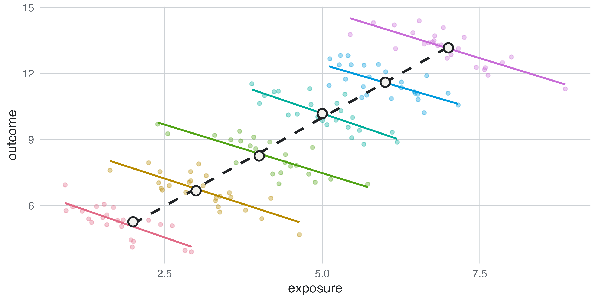
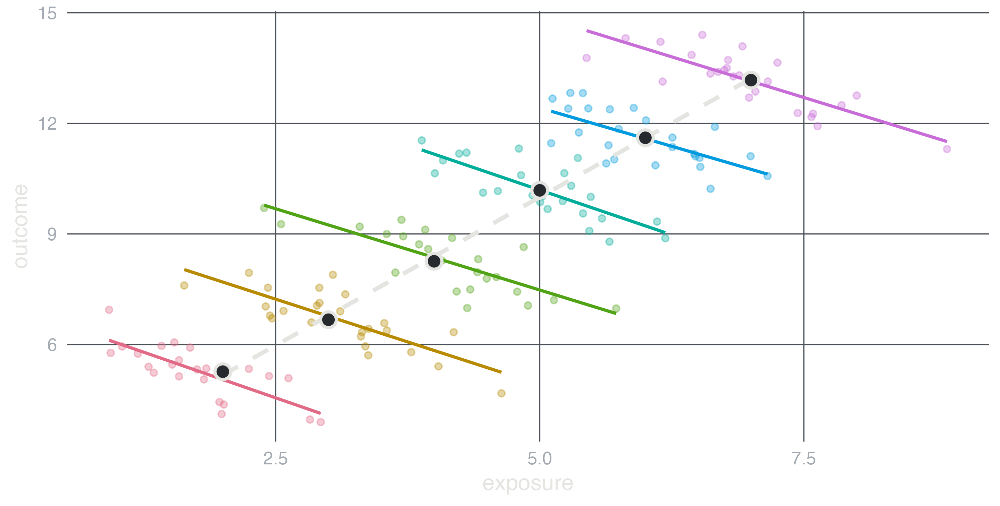
Strengths. Uses routine data (registries, censuses), so it is fast and cheap; studies exposures that only exist at group level (policies, water hardness, air pollution); good for generating hypotheses (Morgenstern 1995).
Limitations. The ecological fallacy (Figure 2): a group-level association need not hold for individuals, because regions differ in many things at once (contextual confounding) and nobody knows who in a region was exposed and who fell ill. Group summaries also hide non-linear effects.
Analysis. Regression of the regional rate on regional means and percentages, weighted by population size (Poisson with the population as offset for counts).
Interpretation. A coefficient per percentage point of smokers is the change in the regional rate between regions that differ by one point. It is not the risk ratio of smoking.
In studysim. Water hardness and mortality or Dietary fat and breast cancer, ecological design: compare the regional slope with the individual effect in the answer key.
What it is. People free of the outcome are classified by exposure and followed until the outcome, a competing event, loss to follow-up or the end of the study.
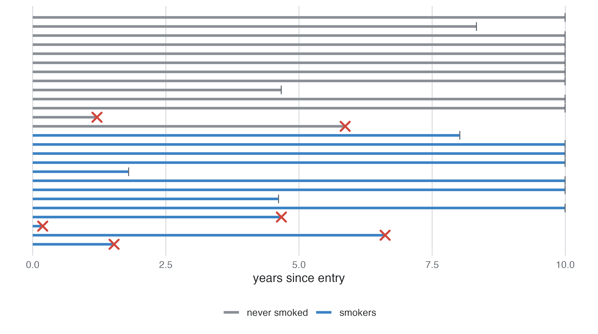
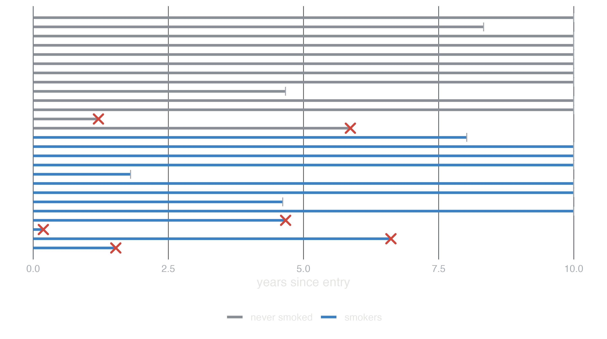
Estimates. Risks (cumulative incidence), rates and hazards in each exposure group, and their ratios and differences.
Strengths. Exposure is measured before the outcome, so the time order is clear and recall cannot be biased by the outcome; several outcomes of one exposure can be studied; it gives absolute risks.
Limitations. Large and long for rare or slow outcomes (the coronary cohort of 3,000 people has about 250 events in 10 years); losses to follow-up that depend on prognosis bias the results (informative censoring); confounding, as in any observational design; exposure can change during follow-up.
Analysis. Kaplan-Meier curves and the log-rank test; Cox regression for hazard ratios adjusted for confounders; Poisson regression of counts with log person-time as offset for rates; logistic regression only when everybody is followed for the same period.
Interpretation. A hazard ratio of 1.6 for smoking means that at any time during follow-up, among those still free of the event, smokers have 1.6 times the event rate of non-smokers with the same values of the adjustment variables. It assumes the ratio is constant over time (check proportional hazards).
Two traps. A treatment that starts during follow-up must not be analysed as if it were present from entry: the treated had to survive until they started it (immortal time), and the treatment looks protective even when useless (Suissa 2008). Treat it as a time-dependent variable, or compare from a landmark time. And adjusting for something that happens after the exposure (a mediator, or a consequence of the outcome) changes the question; see Causal diagrams.
In studysim. Coronary heart disease incidence, cohort; Biases ▸ Informative loss to follow-up and Treatment started during follow-up.
A prognosis study is a cohort of patients from diagnosis or treatment, recruited over several years (staggered entry), to describe survival and its predictors. When patients can die of something else before the outcome of interest, that death is a competing event. A Cox model that censors it estimates the cause-specific hazard ratio, a valid measure of the effect on the rate of the event. But 1 − Kaplan-Meier, which treats the deaths from other causes as if those patients could still have the event, overstates its cumulative incidence (Figure 4).
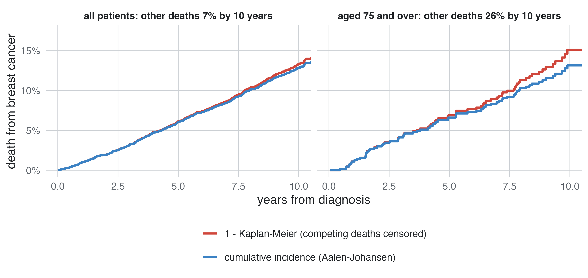
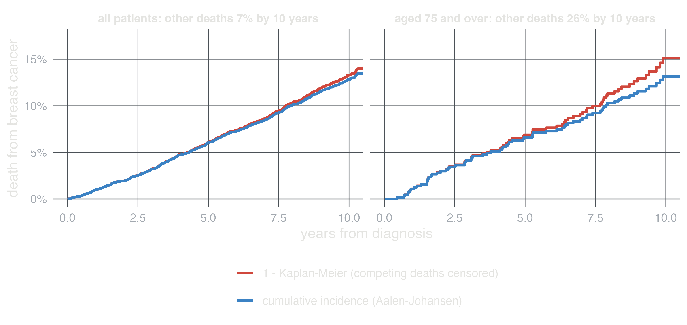
What it is. All (or a random sample of) the cases of a disease arising in a source population, and a sample of people from the same population who are not cases (controls); exposure is then measured in both, usually looking back.
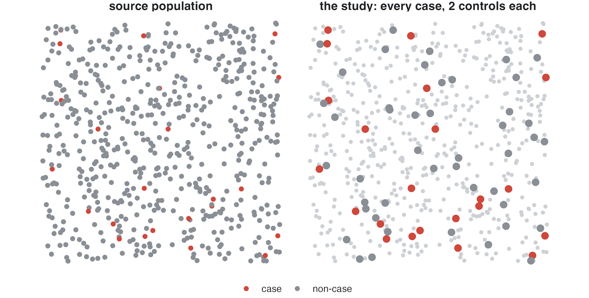
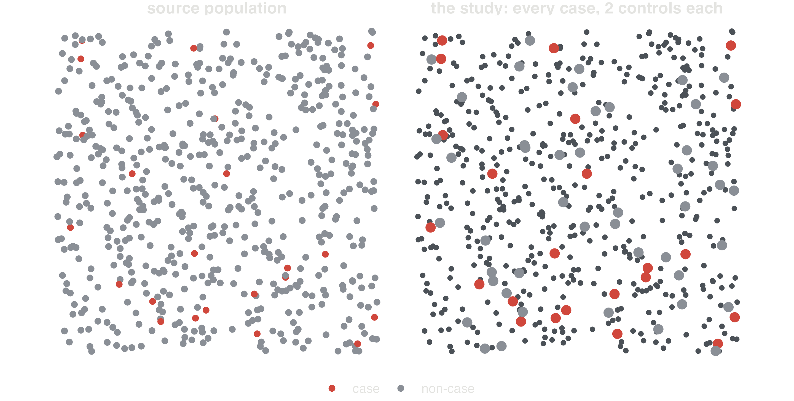
Estimates. The exposure odds ratio, which equals the disease odds ratio. With controls sampled from those still at risk when each case occurs (risk-set sampling, as in a nested case-control study) it estimates the rate ratio, with no rare-disease assumption. Otherwise it approximates the risk ratio when the disease is rare.
Strengths. Efficient for rare diseases and long latencies (a few hundred cases instead of a cohort of a hundred thousand); many exposures can be studied for one disease; fast.
Limitations. Controls must come from the population that gave rise to the cases: hospital controls admitted for diseases related to the exposure distort the odds ratio (selection bias). Exposure recalled after the diagnosis can be reported differently by cases (recall bias). No absolute risks unless the sampling fractions are known.
Analysis. Logistic regression with case status as the outcome, adjusted for confounders. The intercept is meaningless (it reflects the sampling), but the odds ratios are valid.
Interpretation. An odds ratio of 7.7 for smoking 1-14 cigarettes a day means the odds of lung cancer are 7.7 times higher than in never smokers with the same age and sex. For a rare disease it reads as the rate ratio.
In studysim. Lung cancer and smoking or Oesophageal cancer, case-control; Biases ▸ Recall bias and Controls selected by exposure, ticking smoking as the exposure.
Each case gets controls with the same values of some confounders (age, sex, hospital). Matching makes the groups comparable on those variables and can increase efficiency, but it must be kept in the analysis: conditional logistic regression compares each case with its own controls. An ordinary logistic regression of matched data is biased towards the null, the effect of a matching variable cannot be estimated, and matching on something caused by the exposure (overmatching) removes part of the effect.
Both sample a cohort whose follow-up is already recorded, to avoid measuring an expensive exposure (a biomarker in stored blood) on everybody.
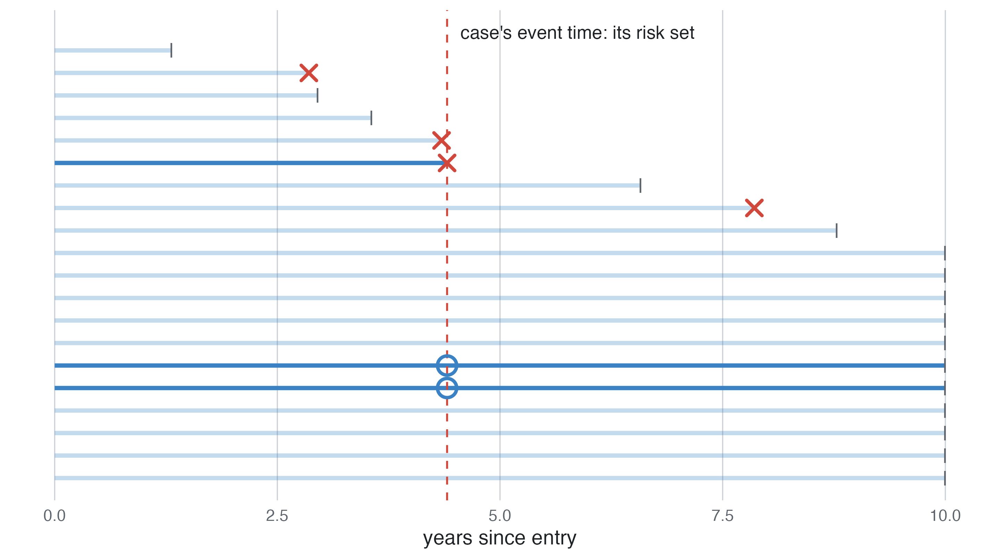
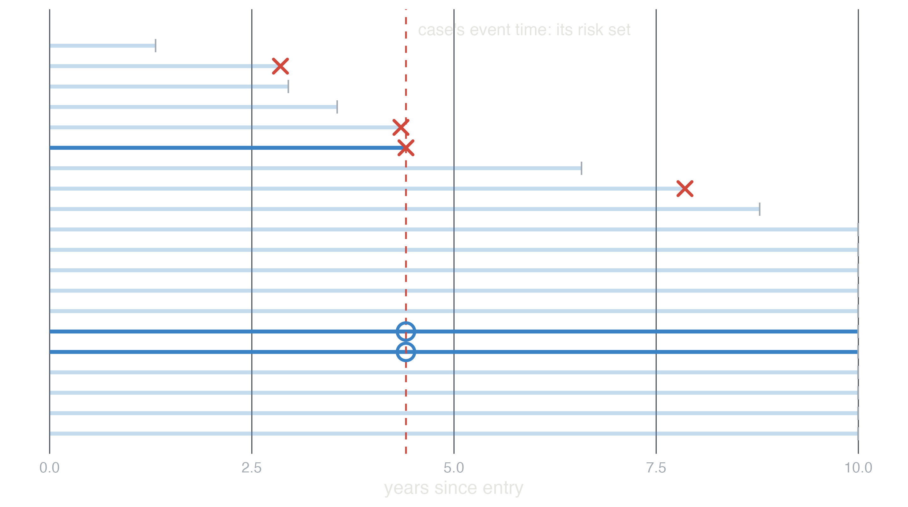
In studysim. Relapse of Wilms tumour: nested case-control and case-cohort from the same cohort.
| design | biggest threat | protect with |
|---|---|---|
| Cross-sectional | unknown time order; prevalent cases | incident cases, clear definitions of when exposure happened |
| Ecological | ecological fallacy | individual data; use only for hypotheses |
| Cohort | confounding; informative loss to follow-up; immortal time | adjustment chosen with a DAG; complete follow-up; time-dependent exposures |
| Case-control | selection of controls; recall bias | population controls from the source population; records instead of recall |
| Matched | analysis that ignores matching; overmatching | conditional logistic regression; match only on confounders |